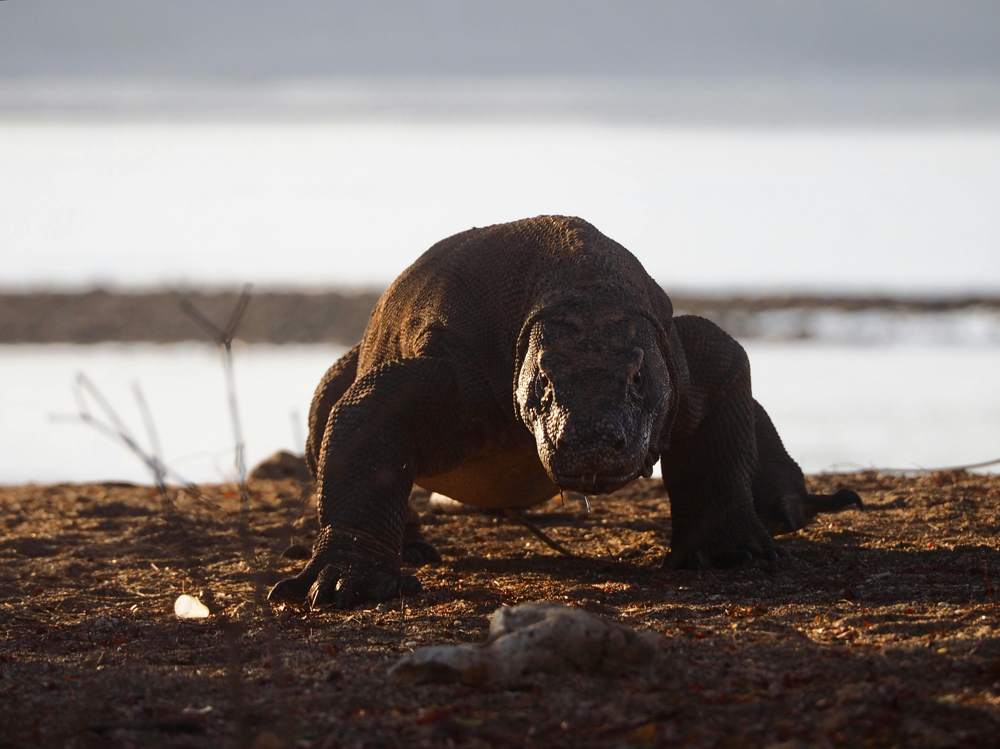

Komodo merupakan spesies terbesar dari familia Varanidae, sekaligus kadal terbesar di dunia, dengan rata-rata panjang 2-3 meter dan beratnya bisa mencapai 100 kg.
Tubuhnya yang besar dan reputasinya yang mengerikan membuat mereka menjadi salah satu hewan paling terkenal di dunia. Komodo liar dewasa biasanya memiliki berat
sekitar 70kg, tetapi komodo yang dipelihara di penangkaran sering kali memiliki bobot yang lebih berat.

Spesimen liar terbesar yang pernah ditemukan panjangnya mencapai 3.13 meter dengan berat sekitar 166kg, termasuk berat makanan yang belum dicerna di dalam perutnya.
Komodo memiliki ekor yang sama panjang dengan tubuhnya. Di dalam mulut komodo dewasa, terdapat sekitar 60 buah gigi yang bergerigi tajam sepanjang sekitar 2.5cm dan
terlapis besi, yang sering terlepas atau di tanggalkan. Komodo memiliki lidah yang panjang, berwarna kuning kecoklatan dan bercabang. Air liur komodo merupakan salah
satu hal yang sering dibicarakan banyak orang karena kebanyakan orang menganggapnya beracun seperti bisa ular atau kadal beracun, bahkan dianggap tidak ada obatnya,
baik untuk mencegah maupun menetralkan racun terebut. Walau begitu, hal ini menjadi perdebatan panjang diantara para ahli hewan di dunia. Komodo mampu melihat hingga
sejauh 300m, namun karena retinanya hanya memiliki sel kerucut, hewan ini tidak dapat melihat dengan baik di kegelapan malam. Komodo mampu membedakan warna namun
tidak begitu mampu membedakan objek yang tak bergerak. Komodo memiliki indera pendengaran, walaupun memiliki lubang telinga.